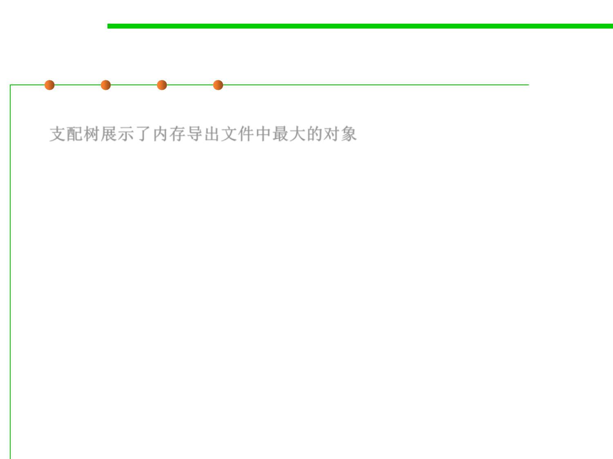

8.2 Dynamic Program Analysis Methods and Tools
Dominator tree 支配树
▪ The dominator tree displays the biggest objects in the heap dump.
支配树展示了内存导出文件中最大的对象
▪ The next level of the tree lists those objects that would be garbage
collected if all incoming references to the parent node were
removed.
▪ The dominator tree is a powerful tool to investigate which objects
keep which other objects alive.
▪ It can be grouped by class loader (e.g. components) and packages
to ease the analysis.